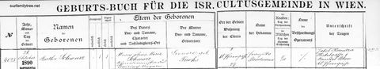
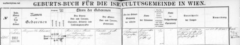
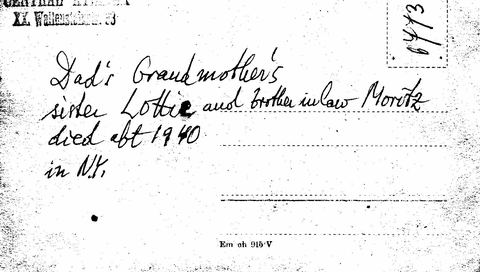
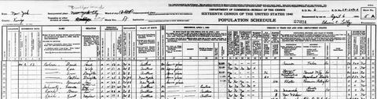

Leonore Lotti Fuchs
1859–1947
Life events
| Born | 25 May 1859 · Námestovo, Zilinsky, Slovakia Map · Film: 2004578.2. Image: 22. Pg: 11. Rec: 299 (not online) was Námesztó, Hungary |
|---|---|
| Lived | 1875 · Vienna, Austria Map · First moved to Vienna, per Nazi escape records |
| Married | 22 Sep 1878 · Isak Zirlsohn · Leopoldstädter Tempel, 1020 Tempelgasse 5, Vienna, Austria Map  |
| Married | 2 Mar 1884 · Moses Moritz Schwarz · Giering, Wels-Land, Upper Austria, Austria Map |
| Lived | 28 Oct 1890 · 1020, Kleine Pfarrgasse 29, Vienna, Austria Map · per daughter's birth record |
| Lived | 24 Jul 1898 · 1200 Bäuerlegasse 19, Vienna, Austria Map · per Richard's birth |
| Lived | 14 Feb 1909 · 1200 Bäuerlegasse 19, Vienna, Austria Map · per Philipps' marriage |
| Lived | 14 Sep 1919 · 1200 Wolfsaugasse 10-21, Vienna, Austria Map · per daughter's marriage record |
| Nazi Persecution | 26 Mar 1939 · 1200 Wolfsaugasse 10-21, Vienna, Austria Map · Narrowly escaped the Nazis |
| Departure | 7 Apr 1939 · Hamburg, Hamburg, Germany Map |
| Arrival | 16 Apr 1939 · Manhattan, New York Map |
| Lived | 1940 · Manhattan, New York Map · Marital Status: Widowed; Relation to Head: Mother-in-law  |
| Died | 16 Jun 1947 · Manhattan, New York Map |
Family

Moses Moritz Schwarz1856–1938
Children
 Philipp Schwarz1884–1926
Philipp Schwarz1884–1926 Johanna Schwarz1886–1888
Johanna Schwarz1886–1888 Rose Schwarzb. 1888
Rose Schwarzb. 1888
Bertha Schwarz1890–1893
Margarethe Schwarz1892–1977 Wilhelm Schwarz1895–1954
Wilhelm Schwarz1895–1954 Hugo Schwarz1897–1897
Hugo Schwarz1897–1897 Richard Schwarz1898–1898
Richard Schwarz1898–1898
Photos
Leonore Lotti Fuchs
Jakob Fuchs
Johanna 'Hana' Kohn
Leonore Lotti Fuchs
Isak Zirlsohn
Samuel Blau
Leonore Lotti Fuchs
Moses Moritz Schwarz
Margarethe Schwarz

Anna Maria Schepan
Teresa Feldman
Josef Blau
Betti Borbola Fuchs
Samuel Blau
Ilonka 'Helen' Blau
+15 more

Leonore Lotti Fuchs

Leonore Lotti Fuchs
Moses Moritz Schwarz
Leonore Lotti Fuchs
Leonore Lotti Fuchs
Leonore Lotti Fuchs
Leonore Lotti Fuchs
Leonore Lotti Fuchs
Leonore Lotti Fuchs
Leonore Lotti Fuchs
Leonore Lotti Fuchs
Leonore Lotti Fuchs
Margarethe Schwarz
Rose Schwarz
David Berg Bohrer

Leonore Lotti Fuchs
Leonore Lotti Fuchs